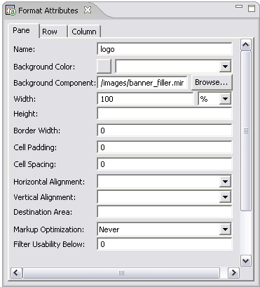

When you are working with the Layout editor you can use the Format Attributes view to enter the attributes of formats in your layout.
The attributes for formats vary with the format type. Several attributes are common to most formats.
When this view is visible, MCS shows the attributes of the format you have selected. In addition there are tabs for Row and Column where you can set values for grid formats.

Related topics
Layout editor
MCS views
Outline view
Layout attributes